오늘 만들 것과 쓰는 도구
책상에서 자꾸 떨어지는 케이블을 꽂아 둘 받침을 AI에게 설계시켜요. 이 영상이 보려는 건 모양이 그럴듯한지가 아니에요. 저장한 파일을 다른 CAD(Computer-Aided Design) 엔진으로 열었을 때도 구멍 크기가 맞는지까지 확인하는 게 목표예요.
쓰는 도구는 smlibpy예요. SMLib라는 CAD 엔진을 파이썬에서 부를 수 있게 만든 라이브러리예요. CAD가 물건의 모양과 치수를 컴퓨터로 설계하는 도구라면, 이 라이브러리는 그 안에서 입체 모양을 계산하는 부분을 맡아요. 아래 화면은 smlibpy의 GitHub 첫 화면이에요. 왼쪽에 파이프 플랜지 도면이, 오른쪽에 'Modelling in Python'이라는 제목이 보여요.
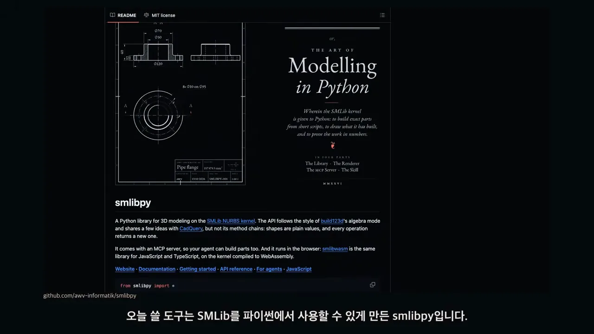
이어서 화면은 엔비디아의 usd-brep 저장소로 넘어가요. 첫 줄에 NURBS(Non-Uniform Rational B-Spline) 기반 입체 모델링 라이브러리라고 적혀 있어요. 발표자는 엔비디아가 공개한 이 CAD 엔진을 AI 에이전트와 연결해 물건을 만드는 사례가 나오고 있다고 소개해요. 이번 실습은 Codex에게 설계 코드를 맡기고, 이 엔진으로 파일을 만드는 방식이에요.

AI에게 넘긴 조건과 설계 코드
받침 모양부터 볼게요. 위에서 본 화면에 큰 원 네 개가 케이블 구멍이고, 원마다 아래쪽(앞쪽)으로 좁은 틈이 열려 있어요. 위쪽 양 끝의 작은 원 두 개는 받침을 고정하는 구멍이에요. 그냥 상자보다 고칠 곳이 분명해서 실습 대상으로 골랐어요.
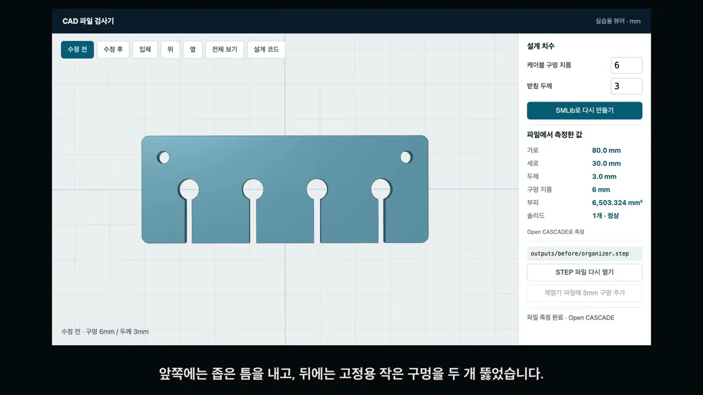
AI에게 준 요청
터미널 둘째 줄이 실제 요청이에요. 케이블 네 개를 정리할 받침을 구멍 지름 6mm, 두께 3mm로 만들고, 구멍 8mm·두께 5mm로 고친 파일도 만들어 달라고 했어요. 그 아래 줄은 Codex의 첫 대답이에요. SMLib 사용법 문서와 설치된 API(Application Programming Interface)를 먼저 확인하고, 두 규격을 만든 뒤 STEP 파일을 독립 커널로 다시 열어 치수를 검증하겠다고 해요.
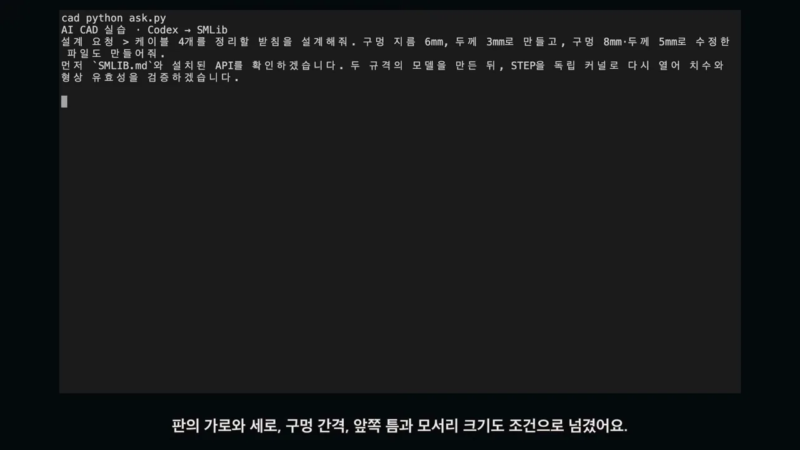
조건을 이만큼 정해 주는 이유가 있어요. 정해 두지 않은 부분은 AI가 마음대로 바꿀 수 있어요. 숫자로 고정해 두면 다음에 고칠 때 필요한 곳만 바꿀 수 있어요.
생성된 설계 코드
Codex가 쓴 코드에서 볼 곳은 build(hole=6.0, thickness=3.0) 함수 첫 줄이에요. 구멍 지름과 판 두께가 인자로 따로 나와 있어요. 아래 main()에서도 --hole, --thickness 옵션으로 이 두 숫자만 바꿔 실행할 수 있게 해 놨어요.
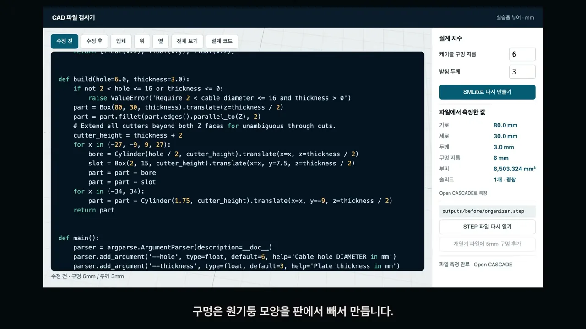
part = part - bore, part = part - slot처럼 빼기로 구멍과 틈을 만들어요. 구멍 지름이 2 초과 16 이하가 아니면 에러를 내는 검사도 들어 있어요. 영상 01:38에서 보기코드가 하는 일을 순서대로 그리면 아래와 같아요. 80×30 판을 만들고 세로 모서리를 2mm 둥글린 뒤, x = −27, −9, 9, 27 자리마다 원기둥(케이블 구멍)과 2×15 직육면체(틈)를 빼요. 마지막으로 x = ±34 자리에 고정 구멍을 빼요. 구멍은 지름을 입력받으니까 원기둥 반지름에는 그 절반(hole / 2)을 써요.
치수를 바꾸고 파일에서 다시 재기
이제 실습용으로 만든 'CAD 파일 검사기' 화면이에요. 왼쪽은 만들어진 모델이고, 오른쪽 '파일에서 측정한 값'은 저장한 파일을 다시 읽어서 잰 숫자예요. 처음 모델은 가로 80mm, 세로 30mm, 두께 3mm로 나왔어요. 옆으로 돌려 보면 판이 꽤 얇아요.
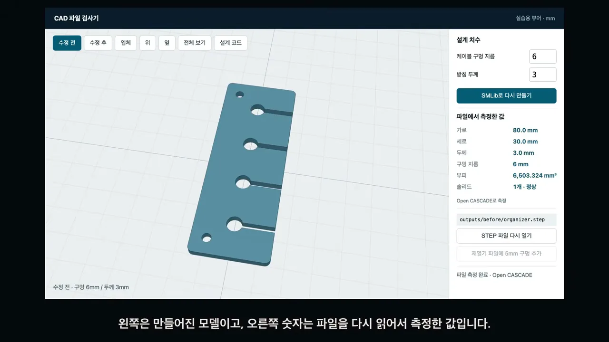
구멍 8mm, 두께 5mm로 바꾸기
케이블이 더 굵다고 치고, 오른쪽 위 '설계 치수' 칸에 케이블 구멍 지름 8, 받침 두께 5를 넣어요. 그 아래 'SMLib로 다시 만들기' 버튼은 기존 그림을 늘리는 게 아니에요. 설계 코드를 새 숫자로 다시 실행해서 새 파일을 만들어요.
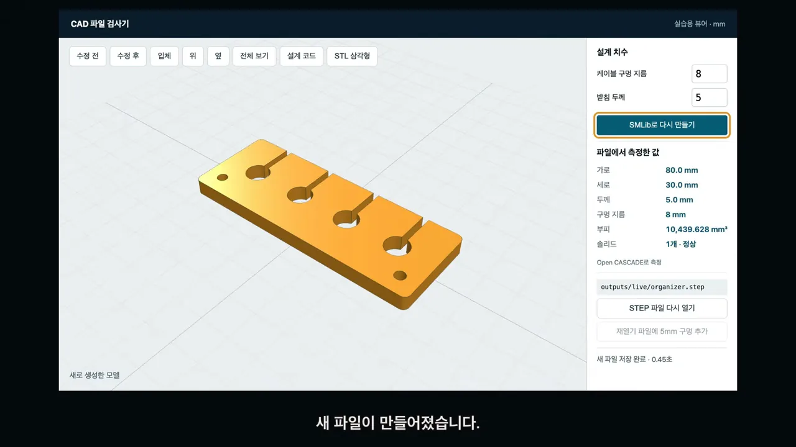
수정 전과 후를 같은 방향(위)에서 번갈아 봐요. 파란 모델이 구멍 6mm, 노란 모델이 8mm예요. 구멍은 확실히 넓어졌지만 판 전체 크기는 그대로예요. 앞쪽 틈 폭 2mm와 위쪽 고정 구멍 위치도 바뀌지 않았어요.
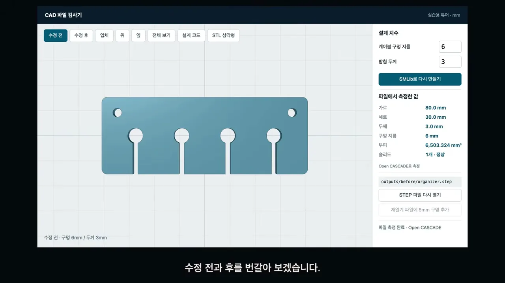
두께는 옆에서 봐야 잘 보여요. 3mm였던 판이 5mm가 됐어요. 발표자는 방향을 나눠 보라고 권해요. 구멍 크기만 들여다보다가 두께가 엉뚱하게 바뀐 걸 놓칠 수 있기 때문이에요.
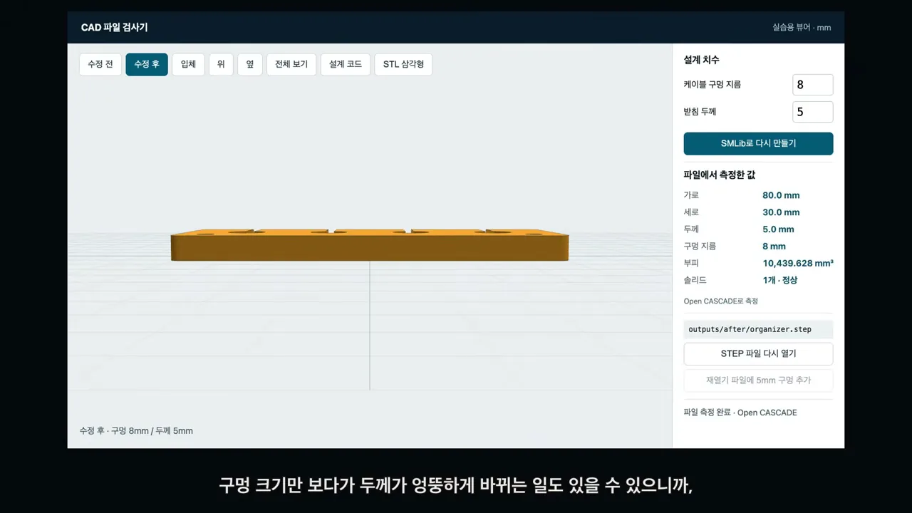
측정값은 파일에서 읽은 숫자예요
오른쪽 측정값 칸에 노란 테두리가 쳐진 곳이 두께 5.0mm예요. 이 숫자들은 요청 문장을 그대로 띄운 게 아니라, 파일의 면과 경계를 읽어서 잰 값이에요. AI가 '바꿨어요'라고 말하는 것과 파일이 실제로 바뀐 것은 다를 수 있어서, 이렇게 따로 재 보는 단계가 필요해요.
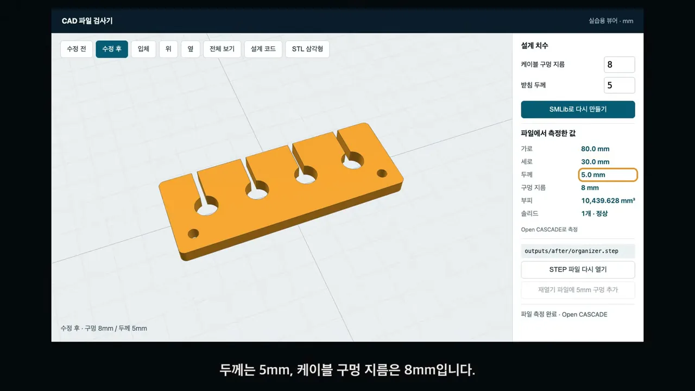
화면에 나온 측정값을 나란히 놓으면 이래요.
| 항목 | 수정 전 (파란색) | 수정 후 (노란색) |
|---|---|---|
| 가로 | 80.0 mm | 80.0 mm |
| 세로 | 30.0 mm | 30.0 mm |
| 두께 | 3.0 mm | 5.0 mm |
| 구멍 지름 | 6 mm | 8 mm |
| 부피 | 6,503.324 mm³ | 10,439.628 mm³ |
| 솔리드 | 1개 · 정상 | 1개 · 정상 |
다른 엔진으로 다시 열고 구멍 하나 더
이제 저장한 파일을 다시 열어 봐요. 여기서 쓰는 STEP 파일은 CAD 프로그램끼리 입체 설계를 주고받는 형식이에요. 궁금한 건 하나예요. 만든 프로그램 밖에서도 이 파일을 그대로 쓸 수 있을까요?
그래서 이번에는 SMLib 대신 Open Cascade라는 다른 CAD 엔진으로 읽었어요. CadQuery로 파일을 불러오고, 그 결과로 화면에 보이는 입체를 다시 만들었어요. 화면 왼쪽 아래에 'STEP 재열기 · Open CASCADE에서 생성한 메시'라고 적혀 있고, 파일 경로도 outputs/reopened/organizer.step으로 바뀌었어요.
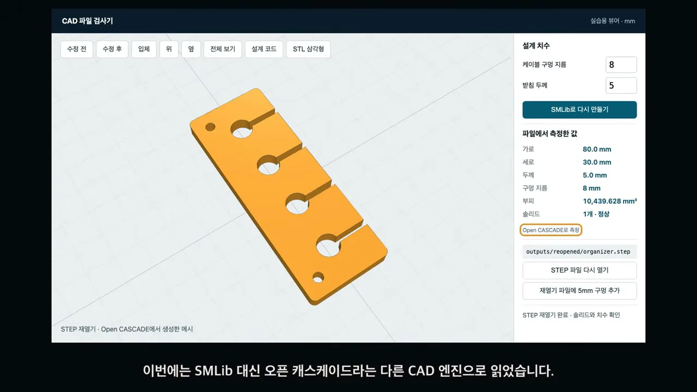
위에서 본 화면의 측정값을 보면 구멍 지름이 8mm로 그대로예요. 두께 5mm, 가로 80mm, 세로 30mm도 같아요. 오른쪽 아래에는 'STEP 재열기 완료 · 솔리드와 치수 확인'이 떠 있어요. 하나로 이어진 정상 입체라는 뜻이에요.

다시 연 모델에 구멍 하나 더
여기서 한 걸음 더 나가요. 다시 연 모델의 뒤쪽 가운데에 5mm 구멍을 하나 뚫어요. 원래 생성 코드를 다시 돌리지 않고, 불러온 입체를 직접 가공하는 거예요. 아래 화면에서 위쪽 가운데에 새 구멍이 생겼고, 케이블 구멍 네 개와 고정 구멍 두 개는 그대로 남았어요.
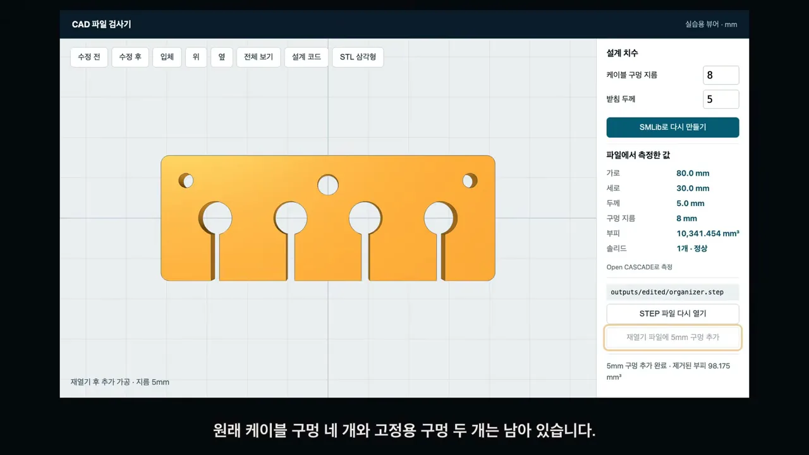
outputs/edited/organizer.step이에요. 영상 04:40에서 보기숫자도 맞아떨어져요. 부피가 10,439.628에서 10,341.454mm³로 줄었는데, 차이는 98.174mm³로, 화면의 98.175mm³와 반올림 차이뿐이에요. 지름 5mm 원기둥을 두께 5mm만큼 뚫으면 2.5 × 2.5 × π × 5 ≈ 98.17mm³가 빠지니까 화면 값과 같아요. 다른 엔진에서 열고, 거기서 다시 고치는 데까지 이어진 셈이에요.
출력까지 남은 일과 쓸 곳
STEP과 함께 저장한 STL(STereoLithography) 파일도 있어요. 두 형식은 담는 것이 달라요. STEP은 곡면과 입체 정보를 그대로 전달하고, STL은 표면을 작은 삼각형으로 나눈 형태예요. 'STL 삼각형' 탭을 누르면 받침 표면이 가늘고 긴 삼각형 수백 개로 쪼개진 모습이 보여요.
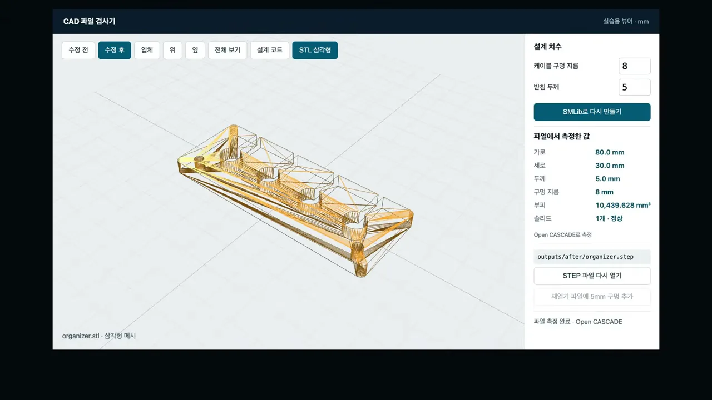
STL은 3D 프린터의 출력 준비 프로그램에서 많이 쓰는 형식이에요. 다만 파일만 있다고 바로 뽑을 수 있는 건 아니에요. 발표자는 재료와 출력 방향, 그리고 케이블을 끼워 넣을 때 필요한 끼움 여유를 더 정해야 한다고 짚어요.
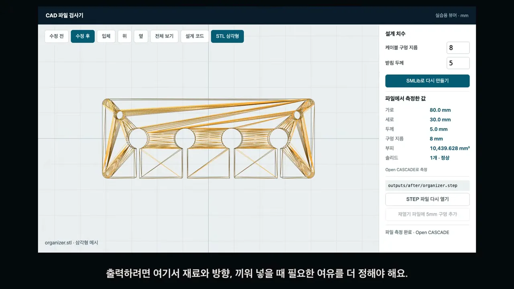
어디까지 확인했고, 어디에 쓸까요
이번 실습이 확인한 건 파일 안의 치수와, 다른 엔진에서 다시 열기까지예요. 케이블이 실제로 잘 들어가는지는 출력한 물건으로 확인할 단계가 남아 있어요. 전체 흐름을 한눈에 보면 이래요.
flowchart LR A["조건 정하기
구멍 6mm · 두께 3mm
판 크기 · 간격 · 틈"] --> B["Codex가
설계 코드 작성"] B --> C["SMLib로 실행
STEP · STL 저장"] C --> D["숫자만 바꿔 재실행
구멍 8mm · 두께 5mm"] D --> E["Open Cascade로
다시 열어 측정"] E --> F["5mm 구멍
직접 추가"] F -.-> G["남은 단계
출력해서 끼워 보기"]
발표자가 꼽는 쓸모는 두 가지예요. 비슷한 받침을 크기만 바꿔 여러 개 만들 때, 그리고 기존 부품의 구멍 위치를 조정할 때예요. 처음에 조건을 숫자로 정해 두면, 필요한 치수만 바꿔 다시 만들 수 있어서예요.